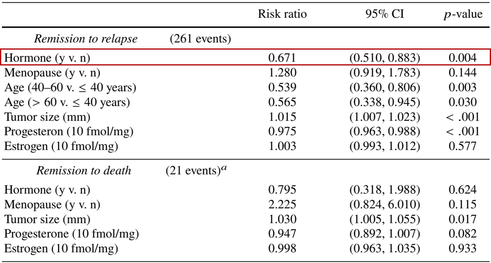
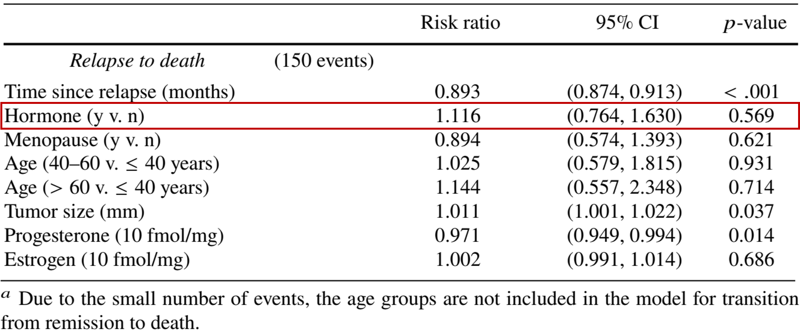

# > gbc_ms
# id start stop status from to hormone age meno size grade nodes
# 1 0.000000 43.836066 1 0 1 1 38 1 18 3 5
# 1 0.000000 43.836066 0 0 2 1 38 1 18 3 5
# 1 43.836066 74.819672 0 1 2 1 38 1 18 3 5
# 2 0.000000 46.557377 1 0 1 1 52 1 20 1 1
# 2 0.000000 46.557377 0 0 2 1 52 1 20 1 1
# 2 46.557377 65.770492 0 1 2 1 52 1 20 1 1
# ...Applied Survival Analysis
Chapter 12 - Multistate Models
Outline
- Basic concepts and examples
- Transition intensity and probability
- Cox-type Markov and semi-Markov models
- Analysis of the German breast cancer study
\[\newcommand{\d}{{\rm d}}\] \[\newcommand{\T}{{\rm T}}\] \[\newcommand{\dd}{{\rm d}}\] \[\newcommand{\cc}{{\rm c}}\] \[\newcommand{\pr}{{\rm pr}}\] \[\newcommand{\var}{{\rm var}}\] \[\newcommand{\se}{{\rm se}}\] \[\newcommand{\indep}{\perp \!\!\! \perp}\] \[\newcommand{\Pn}{n^{-1}\sum_{i=1}^n}\] \[ \newcommand\mymathop[1]{\mathop{\operatorname{#1}}} \]
Concepts & Examples
Definition and Concepts
- Multistate processes
- Stochastic process with discrete values indicating the subject’s current state
- An alternative way of looking at (complex) time-to-event data
- Example: healthy \(\to\) ill (hospitalized) \(\to\) dead
- Stochastic process with discrete values indicating the subject’s current state
- Terminology
- Transition: change of state, e.g., relapse, hospitalization, death
- Absorbing state: a terminal state (no transition after entering), e.g., dead
- Transient state: a non-terminal state, e.g., hospitalized \(\to\) discharge/death
Life-Death & Competing Risks
- Multistate model
- A model specifying possible transitions
- Examples
- Life-death (two states: transient \(\to\) absorbing)
- Competing risks (\(K+1\) states: transient \(\to\) \(K\) absorbing states)

Illness-Death Model
- Examples
- Illness-death model (three states: healthy, ill/hospitalized, dead)
- Semi-competing risks
- Progressive: healthy \(\to\) ill \(\to\) dead
- Reversible: healthy \(\rightleftharpoons\) ill \(\to\) dead

Recurrent Events
- Examples
- Recurrent events (with death) (progressive transient states \(\to\) absorbing)

- Recurrent events (with death) (progressive transient states \(\to\) absorbing)
- Two types of processes
- Progressive: only forward, no turning back
- Reversible: may go back and forth (hospital admission/discharge)
Transition Intensity & Probability
Outcome Data
- Outcome: multistate process \[
Y(t)\in \{0, 1,\ldots, K\},\,\,\, t\geq 0
\]
- \((K+1)\) distinct states
- Example
- \(0=\) remission, \(1=\) relapsed, \(2\) = dead
- \(0=\) event-free, \(k=1,\ldots, K\): cumulative number of hospitalizations (\(K + 1 =\) dead)
- Life history
\[\begin{equation}\label{eq:multi_state:lh1} \mathcal H^*(t)=\{Y(u):0\leq u\leq t\} \end{equation}\]- Past experience up to time \(t\)
Counting Process Notation
- Counting transitions
- \(N_{kj}^*(t)\): number of \(k\to j\) transitions by \(t\) \[
\dd N_{kj}^*(t)=I\{Y(t)=j, Y(t-)=k\}
\]
- \(0\leq k\neq j\leq K\) (not all are possible)
- Examples
- Life-death model: \(N_{01}^*(t)\) counting process for death
- Illness-death model: \(N_{01}^*(t)\) counting process for onset of illness, \(N_{02}^*(t)\) for death without illness, \(N_{12}^*(t)\) for death with illness
- Life history re-formulated \[ \mathcal H^*(t)=\{Y(0), N_{kj}^*(u): 1\leq k\neq j\leq K; 0\leq u\leq t\} \]
- \(N_{kj}^*(t)\): number of \(k\to j\) transitions by \(t\) \[
\dd N_{kj}^*(t)=I\{Y(t)=j, Y(t-)=k\}
\]
Intensity Function: Definition
- Transition intensity
- Instantaneous rate of transition given past \[\begin{align}\label{eq:multi_state:intensity} \lambda_{kj}\{t\mid\mathcal H^*(t-)\}\dd t&=\pr\{\underbrace{Y(t+\dd t)=j}_{\text{Next state}}\mid \underbrace{Y(t-)=k}_{\text{Current state}}, \underbrace{\mathcal H^*(t-)}_{\text{Past experience}}\}\notag\\ &=E\{\dd N_{kj}^*(t)\mid Y(t-)=k,\mathcal H^*(t-)\} \end{align}\]
- Self-generating: completely determines distribution of \(Y(\cdot)\)
- With (time-varying) covariates \[\begin{equation}\label{eq:multi_state:lh2}
\mathcal H^*(t)=\{Y(u), Z:0\leq u\leq t\}
\end{equation}\] \[\begin{equation}\label{eq:multi_state:lh3}
\mathcal H^*(t)=\{Y(u), Z(u):0\leq u\leq t\}
\end{equation}\]
- Past data include baseline and previous trajectory of covariates
Intensity Function: Examples (I)
- With \(Y(0)\equiv 0\)
- Life-death model (\(T\): time to death) \[ \lambda_{01}\{t\mid\mathcal H^*(t-)\} = \lambda(t):\,\, \mbox{hazard of $T$} \]
- Competing risks (\(T\): time to overall failure) \[ \lambda_{0k}\{t\mid\mathcal H^*(t-)\} = \lambda_k(t):\,\, \mbox{$k$th cause-specific hazard} \]
Intensity Function: Examples (II)
- Recurrent events
- Counting process: \(N^*(t)\)
- Intensity for recurrent-event process (Chapter 9) \[\begin{equation}\label{eq:rec:intensity} \ell\{t\mid \overline{N}^*(t-)\}\dd t=E\{\dd N^*(t)\mid \overline{N}^*(t-)\} \end{equation}\]
- Intensity for transition \[\begin{align} \lambda_{k-1,k}\{t\mid\mathcal H^*(t-)\}\dd t &= E\{\dd N^*(t)\mid N^*(t-) =k-1, \overline{N}^*(t-)\}\\ &= \mbox{A sub-function of }\ell\{t\mid \overline{N}^*(t-)\} \end{align}\]
Markov & Semi-Markov Processes
- Markov: transition independent of past given current state \[
\lambda_{kj}\{t\mid\mathcal H^*(t-)\}=\lambda_{kj}(t)\,\,\, \mbox{fixed function}
\]
- Homogeneous Markov: \(\lambda_{kj}(t)\equiv \lambda_{kj}\)
Semi-Markov: transition depends on past through time in current state \[ \lambda_{kj}\{t\mid\mathcal H^*(t-)\}=\lambda_{kj}\{t, B(t)\} \]
- \(B(t)\): time since last entry into current state
- Example: risk of death depends on how long cancer has reappeared
Markov & Semi-Markov Examples
- Illness-death model (semi-competing risks)
- Transition intensities for \(0\to 1\) (onset of illness), \(0\to 2\) (death w.o. illness) \[
\lambda_{01}(t) \mbox{ and } \lambda_{02}(t): \,\, \mbox{always deterministic}
\]
- No prior data to condition on
- Transition intensity for \(1\to 2\) (death with illness) \[\begin{align} \mbox{Markov model}:&\,\,\, \lambda_{12}\{t\mid\mathcal H^*(t-)\}=\lambda_{12}(t) \\ \mbox{Semi-Markov model}:&\,\,\, \lambda_{12}\{t\mid\mathcal H^*(t-)\}=\lambda_{12}(t, t - T) \end{align}\] \(T\): time to onset of illness
- Transition intensities for \(0\to 1\) (onset of illness), \(0\to 2\) (death w.o. illness) \[
\lambda_{01}(t) \mbox{ and } \lambda_{02}(t): \,\, \mbox{always deterministic}
\]
Transition Probability: Definition
- Transition Probability
- Definition \[\begin{equation}\label{eq:multi_state:trans_prob}
P_{kj}\{s,t\mid\mathcal H^*(s-)\}=\pr\{\underbrace{Y(t)=j}_{\text{Future state}}\mid \underbrace{Y(s-)=k}_{\text{Current state}}, \underbrace{\mathcal H^*(s-)}_{\text{Past experience}}\}
\end{equation}\]
- Probability of being in state \(j\) at future time \(t\) given current state \(k\) at \(s\)
- Relation with intensity \[\lambda_{kj}\{t\mid\mathcal H^*(t-)\}\dd t=P_{kj}\{t,t\mid\mathcal H^*(t-)\}\] \[\begin{align}
\mbox{Transition probability }
\mymathop{\rightleftharpoons}_{\mbox{cumulative}}^{\mbox{instantaneous}} \mbox{ intensity}
\end{align}\]
- Similarly to c.d.f. \(\leftrightarrows\) hazard
- Definition \[\begin{equation}\label{eq:multi_state:trans_prob}
P_{kj}\{s,t\mid\mathcal H^*(s-)\}=\pr\{\underbrace{Y(t)=j}_{\text{Future state}}\mid \underbrace{Y(s-)=k}_{\text{Current state}}, \underbrace{\mathcal H^*(s-)}_{\text{Past experience}}\}
\end{equation}\]
Transition Probability: Examples (I)
- Life-death model
- \(\lambda_{01}(t)\): hazard for death \[\begin{align} P_{00}(0, t)&=\exp\left\{-\int_0^t\lambda_{01}(u)\dd u\right\}\,\,\, \mbox{(Survival)}\\ P_{01}(0, t)&=1-\exp\left\{-\int_0^t\lambda_{01}(u)\dd u\right\}\,\,\, \mbox{(c.d.f. of death)} \end{align}\]
- Competing risks
- \(\lambda_{0k}(t)\): cause-specific hazard for \(k\)th risk \[\begin{align} P_{00}(0, t)&=\exp\left\{-\int_0^t\sum_{k=1}^K\lambda_{0k}(u)\dd u\right\}\,\,\, \mbox{(Overall survival)}\\ P_{0k}(0, t)&=\int_0^t P_{00}(0, u-)\lambda_{0k}(u)\dd u\,\,\, \mbox{(Cumulative incidence of $k$th risk)} \end{align}\]
Transition Probability: Examples (II)
- Illness-death model (semi-competing risks)
- \(\lambda_{01}(t), \lambda_{02}(t)\): cause-specific hazard for onset of illness or death w.o. illness \[ P_{00}(0, t)=\exp\left[-\int_0^t\{\lambda_{01}(u)+\lambda_{02}(u)\}\dd u\right] \]
- \(P_{01}(0, t)\) and \(P_{02}(0, t)\) more complicated and depends on \(\lambda_{12}\{t\mid\mathcal H^*(t-)\}\)
- Markov Process: \(\lambda_{12}\{t\mid\mathcal H^*(t-)\}=\lambda_{12}(t)\) \[\begin{equation}\label{eq:multi_state:ill_death} P_{12}(s, t)=\exp\left\{-\int_s^t\lambda_{12}(u)\dd u\right\} \end{equation}\]
Markov Process
- Transition intensity matrix \[ \dd\Lambda_{kj}(u) \;=\; \begin{cases} \lambda_{kj}(u) \dd u, & \text{if } k \neq j, \\ -\sum_{l \neq k} \lambda_{kl}(u) \dd u, & \text{if } k = j \end{cases} \] i.e. \[ \dd\mathbf{\Lambda}(u) \;=\; \begin{bmatrix} -\sum_{k=1}^K \lambda_{0k}(u) & \lambda_{01}(u) & \cdots & \lambda_{0K}(u) \\ \lambda_{10}(u) & -\sum_{k \neq 1} \lambda_{1k}(u) & \cdots & \lambda_{1K}(u) \\ \vdots & \vdots & \ddots & \vdots \\ \lambda_{K0}(u) & \lambda_{K1}(u) & \cdots & -\sum_{k=0}^{K-1} \lambda_{Kk}(u) \end{bmatrix} \dd u \]
Transition Probability vs. Intensity
- Transition probability matrix
- Definition \[ \textbf{P}(s, t) = \begin{bmatrix} P_{00}(s, t) & P_{01}(s, t) & \cdots & P_{0K}(s, t) \\ P_{10}(s, t) & P_{11}(s, t) & \cdots & P_{1K}(s, t) \\ \vdots & \vdots & \ddots & \vdots \\ P_{K0}(s, t) & P_{K1}(s, t) & \cdots & P_{KK}(s, t) \end{bmatrix} \]
- Product limit
- \(s = u_0 < u_1 < \cdots < u_m = t\), with \(u_r - u_{r-1} = \dd u\) \[ \textbf{P}(s, t) \;=\; \lim_{\dd u \to 0} \prod_{r = 1}^m \bigl\{ \mathbf{I} \,+\, \dd\mathbf{\Lambda}(u_r) \bigr\} \]
- \(\mathbf{I}\): Identity matrix
Estimating Discrete Intensities
- Observed data
- \(C\): censoring time
- \(N_{kj}(t) = N^*_{kj}(t \wedge C)\) \[\begin{equation}\label{eq:multi_state:censoredY} \tilde Y(t) \;=\; \begin{cases} Y(t), & \text{if uncensored by } t, \\ -1, & \text{if censored by } t. \end{cases} \end{equation}\]
- Nelsen–Aalen-type estimator \[\begin{align}\label{eq:multi_state:np_intensity} \dd\hat\Lambda_{kj}(t) &\;=\; \frac{\text{Number of observed }k \to j \text{ transitions}} {\text{Number of subjects at risk of a } k \to j \text{ transition}} \notag\\ &\;=\; \frac{\sum_{i=1}^n \dd N_{kji}(t)}{\sum_{i=1}^n I\left\{ \tilde Y_i(t) = k \right\}} \end{align}\]
Aalen–Johansen Estimator
- Product-limit estimator \[
\hat{\textbf{P}}(s, t) \;=\; \lim_{\dd u \to 0}
\prod_{r = 1}^m \bigl\{ \mathbf{I} \,+\, \dd\hat{\mathbf{\Lambda}}(u_r) \bigr\}
\]
- \(s = u_0 < u_1 < \cdots < u_m = t\), with \(u_r - u_{r-1} = \dd u\)
- Reduces to KM, Gray’s estimator in life-death, competing risks models
- Robustness property
- Valid even without Markov assumption
Useful Functionals
- State-occupancy probability \[
P_k(t) = \pr\{Y(t) = k\} = \sum_{l=0}^K \underbrace{\pr\{Y(0) = l\}}_{\text{Initial state}} \, \underbrace{P_{lk}(0, t)}_{\text{Transition probability}}
\]
- Example: probability patient will be ill but still alive in one year
- Restricted mean sojourn time \[
\mu_k(\tau) = E\left[ \int_0^\tau I\{Y(t) = k\} \dd t \right] = \int_0^\tau P_k(t) \dd t
\]
- Average time spent in state \(k\) (healthy, ill but alive, etc.) by time \(\tau\)
Cox-Type Models for Intensity
Observed Data
- Censored life history
- \(\mathcal H(t)=\{Y(u):0\leq u\leq t\wedge C\}\)
- Alternate formulation
- Focusing on (observed) transitions \(k\to j\)
- \(u_k^{(r)}\): \(r\)th time subject enters state \(k\)
- \(v_k^{(r)}\): exit or censoring time
- \(\delta_{kj}^{(r)}\): indicator of observed transition to state \(j\) at \(v_k^{(r)}\) (0 if censored or going to other states)
- Progressive process \(\to\) \(r\) redundant (why?)
- Suitable for models on intensities \(\lambda_{kj}\{t\mid\mathcal H^*(t-)\}\)
- Focusing on (observed) transitions \(k\to j\)
Likelihood Function
- Observed data \[\begin{equation}\label{eq:multi_state:obs}
(u_k^{(r)}, v_k^{(r)}, \delta_{kj}^{(r)}),\hspace{3mm}r=1,2,\ldots;\hspace{2mm} 1\leq k\neq j\leq K
\end{equation}\]
- Collection of all observed transitions
- Likelihood for a single subject \[\begin{equation}\label{eq:multi_state:lik}
\prod_{k\neq j}^K\prod_r\lambda_{kj}\left\{v_k^{(r)}\mid\mathcal H^*(v_k^{(r)}-)\right\}^{\delta_{kj}^{(r)}}
\exp\left[-\int_{u_k^{(r)}}^{v_k^{(r)}}\lambda_{kj}\left\{t\mid\mathcal H^*(t-)\right\}\dd t\right]
\end{equation}\]
- Factorize by transition intensities
Inference for Transition Intensity
- Likelihood for \(k\to j\) transition
- Progressive process \[ \lambda_{kj}\left\{v_k\mid\mathcal H^*(v_k-)\right\}^{\delta_{kj}} \exp\left[-\int_{u_k}^{v_k}\lambda_{kj}\left\{t\mid\mathcal H^*(t-)\right\}\dd t\right] \]
- Left-truncated, right-censored \(N_{kj}^*(t)\) with “hazard” \(\lambda_{kj}\left\{t\mid\mathcal H^*(t-)\right\}\)
- \(u_k\): left-truncation (late entry) time
- \(v_k\): possibly censored event time
- \(\delta_{kj}\): event indicator
Semiparametric Regression (I)
- Modeling target
- Covariate-specific transition intensity \[
\lambda_{kj}\{t\mid\mathcal H^*(t-), \overline Z(t)\} = E\{\dd N_{kj}^*(t)\mid Y(t-)=k,\mathcal H^*(t-), \overline Z(t)\}
\]
- \(Z(t)\): possibly time-dependent covariates
- Covariate-specific transition intensity \[
\lambda_{kj}\{t\mid\mathcal H^*(t-), \overline Z(t)\} = E\{\dd N_{kj}^*(t)\mid Y(t-)=k,\mathcal H^*(t-), \overline Z(t)\}
\]
- Multiplicative intensity models
- Modulated (by covariates) Markov models \[\begin{equation}\label{eq:multi_state:markov}
\lambda_{kj}\{t\mid\mathcal H^*(t-), \overline Z(t)\}=\exp\{\beta_{kj}^\T Z(t)\}\lambda_{kj0}(t)
\end{equation}\]
- Risk of transition independent of past given (current values of) covariates
- \(\beta_{kj}\): log-intensity (risk) ratios of going to state \(j\) for those in state \(k\)
- Modulated (by covariates) Markov models \[\begin{equation}\label{eq:multi_state:markov}
\lambda_{kj}\{t\mid\mathcal H^*(t-), \overline Z(t)\}=\exp\{\beta_{kj}^\T Z(t)\}\lambda_{kj0}(t)
\end{equation}\]
Semiparametric Regression (II)
- Multiplicative intensity models
- Modulated semi-Markov models \[\begin{equation}\label{eq:multi_state:semi_markov}
\lambda_{kj}\{t\mid\mathcal H^*(t-)\}=\exp\{\beta_{kj}^\T Z(t)+\gamma_{kj} B(t)\}\lambda_{kj0}(t)
\end{equation}\]
- Risk of transition depend on past through time last spent in current state and (current values) of covariates
- \(\gamma_{kj}\): log-intensity (risk) ratio with unit increase in the time spent in current state
- Example: illness-death model
- Semi-Markov for \(1\to 2\): risk of death in illness depends on how long the patient has been ill
- \(\gamma_{kj}\): log-intensity (risk) ratio for death with unit increase in the time being ill
- Modulated semi-Markov models \[\begin{equation}\label{eq:multi_state:semi_markov}
\lambda_{kj}\{t\mid\mathcal H^*(t-)\}=\exp\{\beta_{kj}^\T Z(t)+\gamma_{kj} B(t)\}\lambda_{kj0}(t)
\end{equation}\]
Software: survival::coxph() (I)
- Input data format
- Long format, one transition per row
- (
start,stop): \((u_k^{(r)}, v_k^{(r)})\);status: \(\delta^{(r)}_{kj}\) - (
from,to): \((k, j)\)
Software: survival::coxph() (II)
- Basic syntax for multiplicative intensity model
- Fit each type of transition \((k\to j)\) separately
- Factorization of likelihood
covariates: \(Z(t)\) and/or elements of \(\mathcal H^*(t-)\), e.g., \(B(t)\)
- Fit each type of transition \((k\to j)\) separately
# Fit a model for transition k->j
obj <- coxph(Surv(start, stop, status) ~ covariates,
subset = (from == k) & (to == j))GBC: A Multistate Perspective
What’s New
- Study information
- Population: 686 patients with primary node positive breast cancer
- Endpoints: relapse of cancer and death (semi-competing risks)
- Previously analyzed by time to earlier of relapse/death (RFS)
- Multistate perspective
- Does hormonal treatment (or other risk factors) have differential effects on
- Relapse
- Death in remission
- Death after relapse
- Does hormonal treatment (or other risk factors) have differential effects on
Multistate Setup
- Illness-death model
# > gbc_ms
# id start stop status from to hormone age meno size grade nodes
# 1 0.000000 43.836066 1 0 1 1 38 1 18 3 5
# 1 0.000000 43.836066 0 0 2 1 38 1 18 3 5
# 1 43.836066 74.819672 0 1 2 1 38 1 18 3 5
# 2 0.000000 46.557377 1 0 1 1 52 1 20 1 1
# ...
Multiplicative Intensity Models
- Three (semi-Markov) models
# B(t): time spent in current state
gbc_ms$Bt <- gbc_ms$stop - gbc_ms$start
### 0->1: remission to relapse ----------------------------------------
obj01 <- coxph(Surv(start, stop, status) ~ hormone + meno
+ agec + size + prog + estrg + strata(grade), data = gbc_ms,
subset = ((from==0) & (to == 1)))
### 0->2: remission to death ------------------------------------------
obj02 <- coxph(Surv(start, stop, status) ~ hormone + meno
+ size + prog + estrg + strata(grade), data = gbc_ms,
subset = ((from == 0) & (to == 2)))
### 1->2: relapse to death --------------------------------------------
obj12 <- coxph(Surv(start, stop, status) ~ Bt + hormone + meno
+ agec + size + prog + estrg + strata(grade), data = gbc_ms,
subset = ((from == 1) & (to == 2)))Regression Results (I)
- Regression table
- Hormonal therapy beneficial on relapse (31.5% risk reduction; \(p\)-value 0.003)

Regression Results (II)
- Regression table
- Hormonal therapy no effect on progression from relapse to death
- One month away from relapse patient is at 10.7% less risk of mortality

Conclusion
Notes
- Methods and Software
- Nonparametric estimation of transition probability for Markov process: Chapter IV.4 of Andersen et al. (1991)
- Text: Cook and Lawless (2018)
- R-packages
mstate: competing risks models and prediction of transition probabilitiesmsm: Hidden Markov Models (HMMs) & standard models

Summary
- Multistate models
- Multistate process \(Y(t)\in \{0, 1,\ldots, K\}\)
- Transition intensity: risk of going to another state given current state and history
- Multistate process \(Y(t)\in \{0, 1,\ldots, K\}\)
- Cox-type multiplicative intensity models
- Markov or semi-Markov models for intensity \(k\to j\)
coxph(Surv(start, stop, status) ~ covariates, subset = (from==k)&(to==j))
- Markov or semi-Markov models for intensity \(k\to j\)
HW5 (Due April 16)
- Problem 8.18
- Choose one
- Problem 10.6
- Problem 10.15
- Problem 11.18 (a) (“Data > Renal Transplants Study”)
- (Extra credit) Problem 11.2